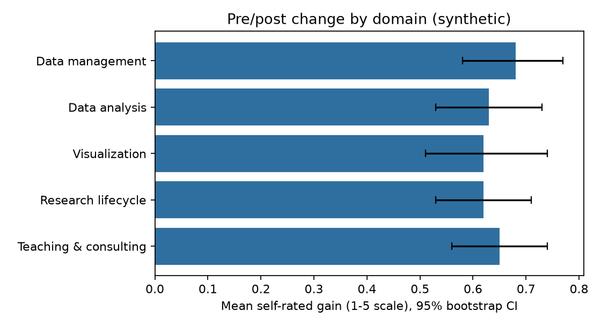
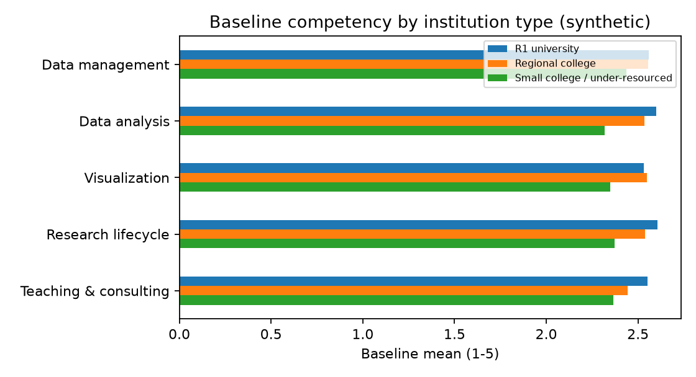

Demo for the Data and Research Competency project, UF Libraries ARCS
Competency survey pipeline
A reproducible workflow that checks a survey instrument, measures change after training, shows where baseline gaps are largest, and codes open-ended comments against a codebook a human can audit.
Self-rated gain after training
Mean change on a 1 to 5 scale, 95% bootstrap interval.

Baseline by institution type
Mean pre-training rating; shows who needs training first.

Pre/post tests
Paired Wilcoxon, Holm-corrected across five domains; dz is the paired effect size.
| domain | n | mean_gain | ci95_low | ci95_high | cohens_dz | wilcoxon_p | p_holm |
|---|---|---|---|---|---|---|---|
| Data management | 120 | 0.68 | 0.58 | 0.77 | 1.23 | 5.8e-17 | 1.7e-16 |
| Data analysis | 120 | 0.63 | 0.53 | 0.73 | 1.18 | 1.5e-16 | 3.0e-16 |
| Visualization | 120 | 0.62 | 0.51 | 0.74 | 0.99 | 7.3e-15 | 7.3e-15 |
| Research lifecycle | 120 | 0.62 | 0.53 | 0.71 | 1.21 | 2.9e-17 | 1.1e-16 |
| Teaching & consulting | 120 | 0.65 | 0.56 | 0.74 | 1.27 | 2.0e-17 | 1.0e-16 |
Instrument reliability
Cronbach's alpha and missing responses per domain and wave.
| domain | wave | n_items | alpha | missing_pct |
|---|---|---|---|---|
| Data management | pre | 3 | 0.705 | 2.2 |
| Data management | post | 3 | 0.819 | 2.2 |
| Data analysis | pre | 3 | 0.744 | 2.2 |
| Data analysis | post | 3 | 0.838 | 2.2 |
| Visualization | pre | 3 | 0.811 | 1.9 |
| Visualization | post | 3 | 0.797 | 0.8 |
| Research lifecycle | pre | 3 | 0.765 | 2.5 |
| Research lifecycle | post | 3 | 0.786 | 1.7 |
| Teaching & consulting | pre | 3 | 0.778 | 1.4 |
| Teaching & consulting | post | 3 | 0.822 | 2.5 |
Open-text coding vs human coder
Cohen's kappa per code from codebook.csv.
| code | kappa_vs_human | prevalence_pct |
|---|---|---|
| time_workload | 1.0 | 24.2 |
| need_hands_on | 0.83 | 30.0 |
| confidence_stats | 0.79 | 35.8 |
| institutional_support | 1.0 | 23.3 |
| peer_community | 1.0 | 24.2 |
| tools_access | 0.79 | 36.7 |
Themes by institution type
Share of coded themes within each institution type.
| institution_type | confidence_stats | institutional_support | need_hands_on | peer_community | time_workload | tools_access |
|---|---|---|---|---|---|---|
| R1 university | 0.15 | 0.15 | 0.17 | 0.14 | 0.18 | 0.21 |
| Regional college | 0.22 | 0.19 | 0.16 | 0.14 | 0.09 | 0.2 |
| Small college / under-resourced | 0.26 | 0.05 | 0.19 | 0.13 | 0.15 | 0.23 |
Suggested clusters for the coder to review
Unsupervised pass that proposes codes a human might have missed. It never replaces the coder.
| cluster | size | top_terms |
|---|---|---|
| 0 | 25 | data, services role, services, role librarians, role, clear data |
| 1 | 36 | unsure, unsure recommend, test, recommend, recommend test, valuable |
| 2 | 15 | slides, practice real, real, real datasets, helped, far |
| 3 | 21 | workload makes, workload, trainings, makes hard, makes, attend |
| 4 | 11 | training library, software training, budget software, budget, library, software |
| 5 | 12 | statistics feels, statistics, method questions, method, patrons ask, questions |
Reproduce and reuse
Run python generate_synthetic_data.py then python analyze.py. Outputs include a de-identified dataset and a data dictionary for sharing and preservation. Codes export as CSV for NVivo.
Self-rated confidence is not measured skill; a real design would pair it with performance tasks.